Scholastic Art & Writing Awards
Multiple regional awards
Student work recognized at the regional level.
스콜라스틱 지역 대회 다수 입상
IMAGINE · EXPERIMENT · CREATE
Your
ImaginationA World
to Explore
Digital Art Education for Teens
Explore ideas · Learn the tools · Create original work
9–12학년을 위한 디지털 아트 온라인 수업을 제공합니다. 도구를 배우는 데서 출발해 자신의 아이디어를 작품으로 발전시키는 과정입니다.
Students interested in digital creativity, storytelling and visual communication.
Explore real-world creative workflows and build original digital projects.
Develop work that reflects your interests and goals. Competition and college requirements vary.
02 · Why digital art / Why here
Meet Digital Art (meetdigitalart) offers project-based digital art, animation, and 3D education in Bergen County, New Jersey, guided by a working professional artist.
Digital art brings images, movement and three-dimensional space together. Start with something you want to express. Learn the tools and creative decisions that help you make it.
Guided projects connect technical practice with storytelling, experimentation and revision.
그림, 움직임, 3D 공간을 통해 생각을 표현합니다. 목표에 맞는 프로젝트와 도구를 선택하고, 피드백과 수정을 거쳐 자신만의 작업으로 발전시킵니다.
03 · Creative process
Find a question, collect references and sketch a direction.
Learn the tools your idea needs. Test images, motion or form.
Use feedback, revise your choices and explain your process.
04 · Student work
Explore student work in digital art, animation, motion graphics and 3D design. These selected projects show how students develop original ideas through planning, production and revision.
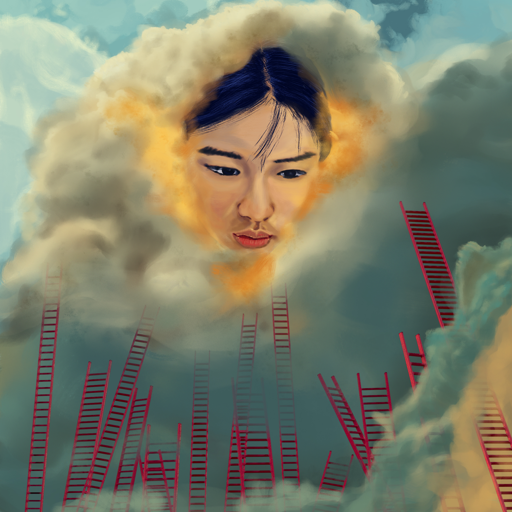
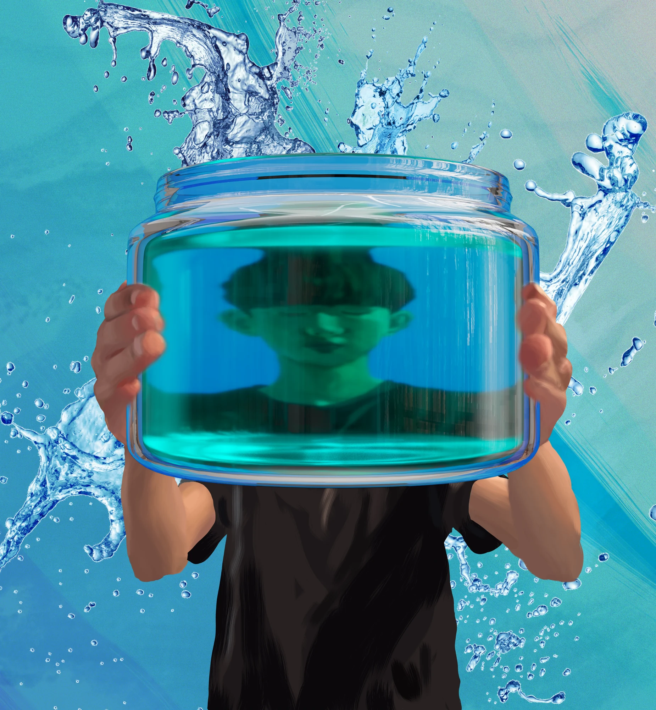
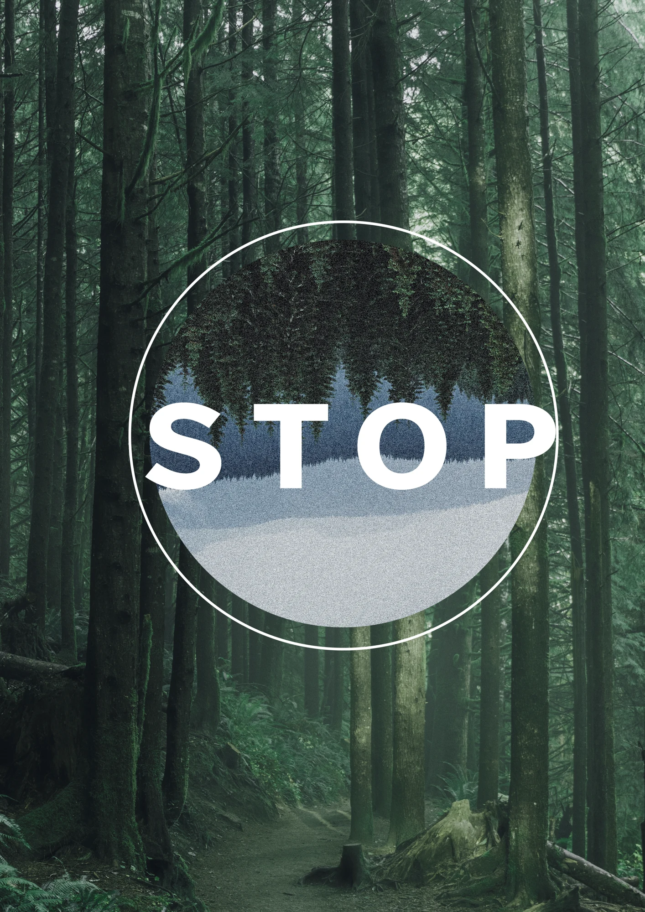
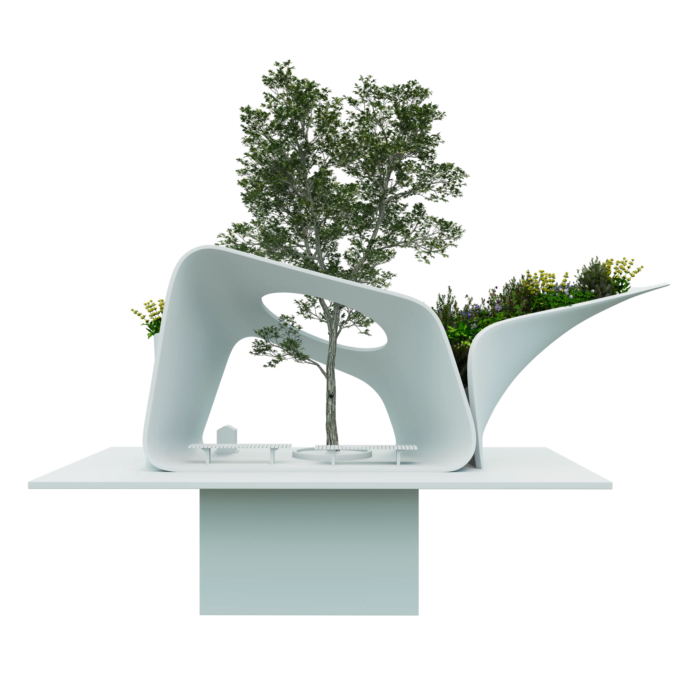
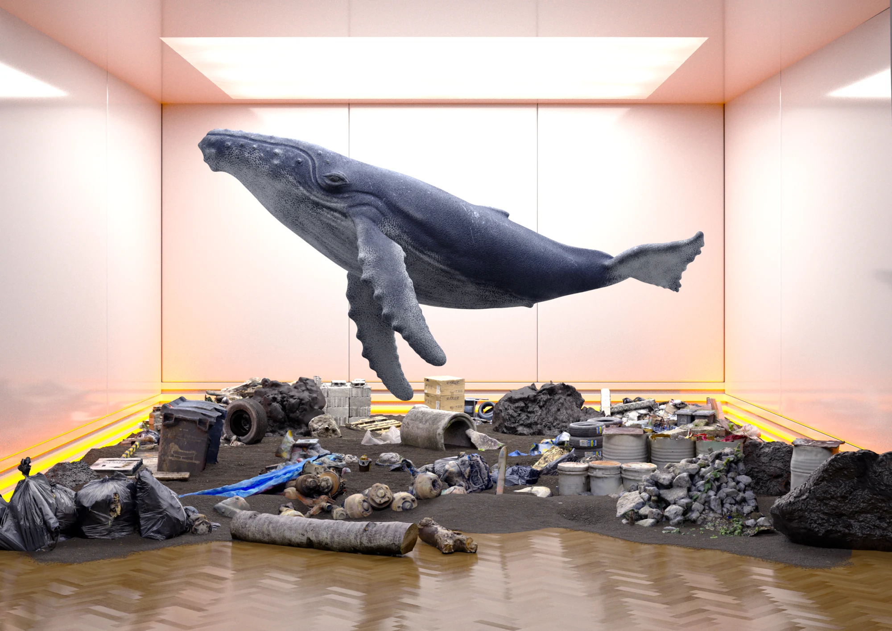
Three beginner animation projects · Get Back Up / Missing Piece / Addiction
A visual exploration of an idea through graphics and movement.
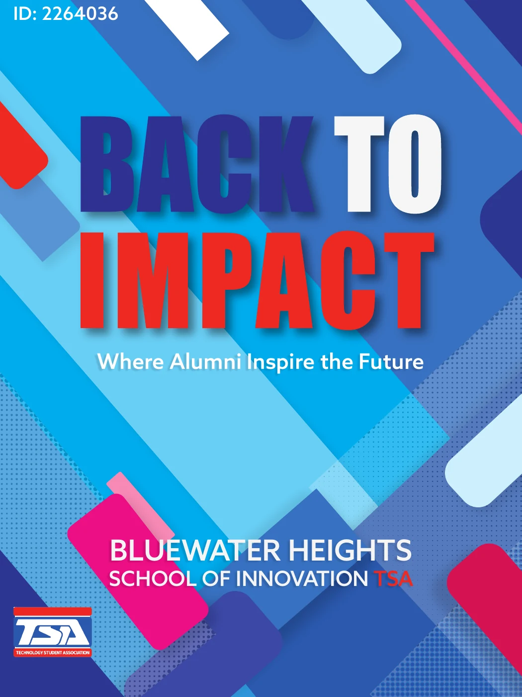
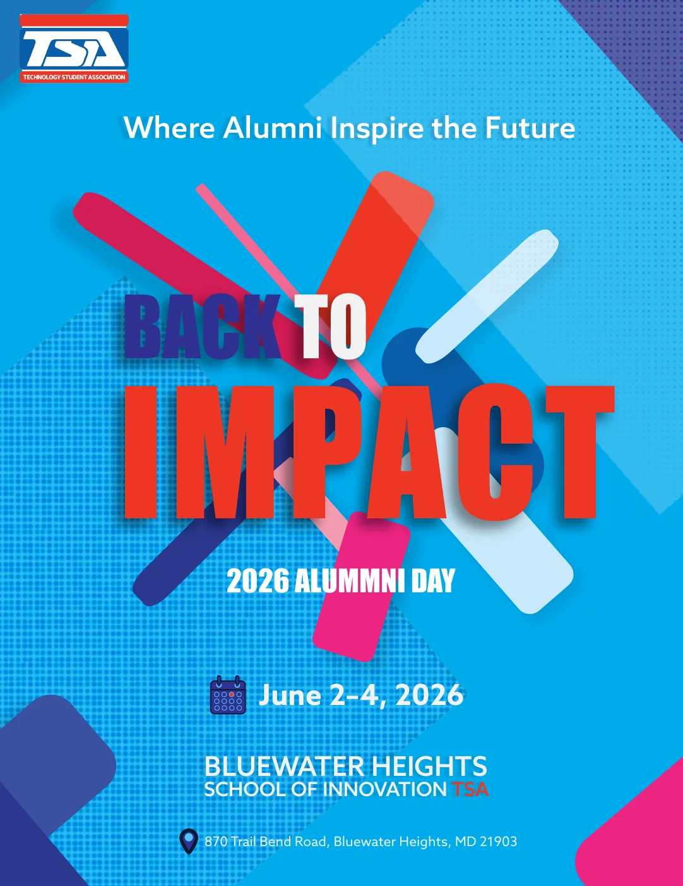
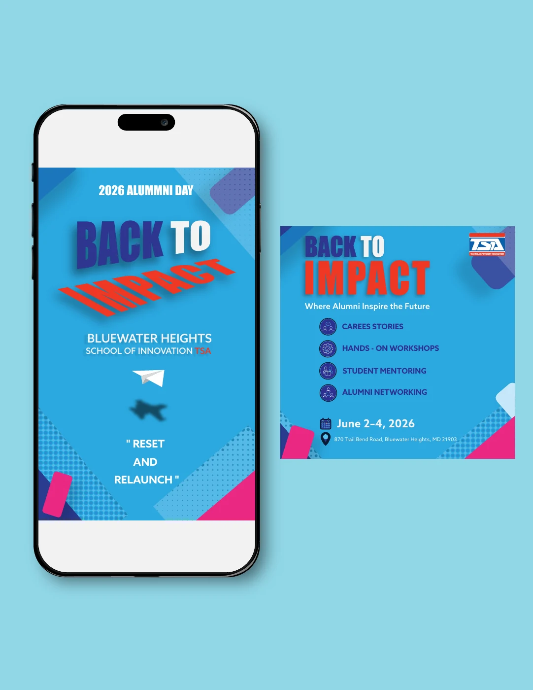
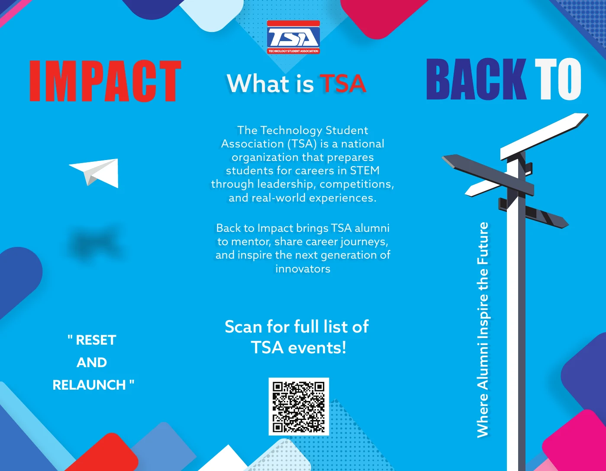
Final design package
Folder cover · Flyer · Social graphic · Brochure
하나의 시각적 방향을 여러 매체에 적용한 디자인 패키지입니다. 최종 버전의 디자인 패키지입니다.
페인팅, 시각디자인, 건축 디자인, 3D 렌더, 애니메이션과 모션 그래픽을 묶은 선정안입니다. 완성 이미지 중심으로 살펴보고, 아래 프로그램 영역에서 제작 과정도 확인할 수 있습니다.
05 · Achievements
Scholastic Art & Writing Awards
Student work recognized at the regional level.
스콜라스틱 지역 대회 다수 입상
2026 · TSA Nationals
Promotional Design
2026 TSA 프로모셔널 디자인 부문
전국 Top 10
2026 · TSA Nationals
Digital Video Production
2026 TSA 디지털 비디오 프로덕션 부문
전국 Top 10
Competition submissions
Student work submitted to the Ocean Awareness Contest (now the Blue Planet Awareness Contest) and The New York Times student competitions.
Ocean Awareness Contest(현 Blue Planet Awareness Contest) 및 뉴욕타임스(NYT) 학생 경연 출품
College preparation · In progress
Students are developing creative projects as part of their extracurricular activities and college preparation.
디지털 아트 프로젝트를 EC(교과 외 활동)로 발전시키며 대학 진학을 준비하고 있습니다.
Competition and college requirements vary. Participation does not guarantee an award or admission.
06 · Programs
Explore digital art classes, animation classes and 3D art classes for teens in Bergen County, New Jersey, including Tenafly, and online. Projects and technical practice are shaped around your experience and interests.
Try digital image-making, animation or 3D. Discover how you enjoy creating.
Turn a personal idea into a focused piece through planning, production and revision.
Develop original work and document your process around your goals. Discuss competition or college requirements individually.
What you can make
Explore these areas through a project matched to your goals. The production steps you focus on depend on your starting point and project scope.
01 · Creative direction
Animation classes for teens connect storytelling, storyboards, character design and movement in a short animated scene.
Short animation · Character story · Motion sequence
Beginner animation class · Student projects
Start with an original idea and develop a short animated scene. These projects show different approaches to character, movement and visual storytelling.
하나의 아이디어를 한 가지 샷으로 표현하는 과제에서 출발한 수업입니다. 학생들은 캐릭터와 움직임, 시각적 스토리텔링을 활용해 짧은 애니메이션으로 발전시켰습니다.
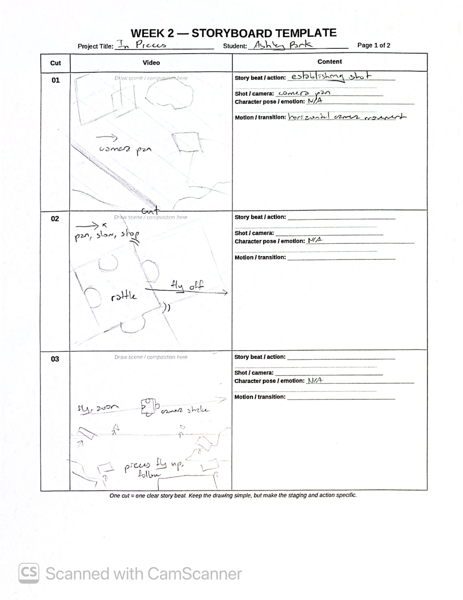
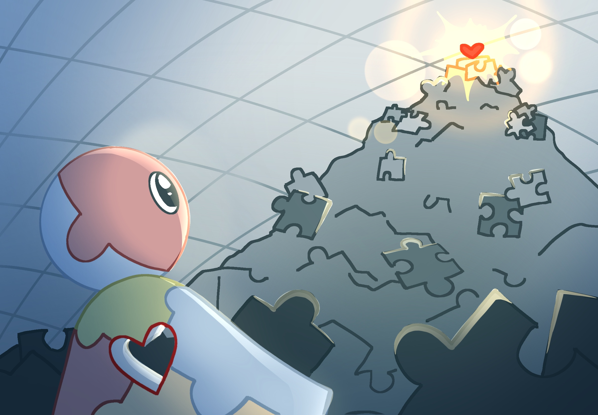
스토리텔링과 캐릭터 디자인에서 출발해 움직임을 만들고, 편집과 합성·영상 특수효과로 완성합니다.
02 · Creative direction
Learn video editing, animated typography, motion graphics and sound through a video essay, research presentation or promotional video.
Video essay · Research presentation · Event & sports promo · Camp interview · Motion graphics
Selected project excerpts · Short preview edits
Sports promotion openings, typography, graphics and spatial storytelling in one short reel.
스포츠 홍보영상의 도입부와 다양한 모션 디자인 장면을 하나의 짧은 릴로 구성했습니다. 원본 전체가 아닌 발췌 편집본입니다.
비디오 에세이, 리서치 프레젠테이션, 이벤트·스포츠 프로모션, 캠프 인터뷰 등 목적에 맞는 영상을 기획하고 제작합니다. 영상 편집에 모션 그래픽, 움직이는 타이포그래피, 자막과 사운드를 결합해 메시지를 효과적으로 전달합니다.
03 · Creative direction
Explore 3D modeling, materials, lighting and rendering through architectural design, product visualization or rendered artwork.
Architectural design · Product visualization · Rendered artwork
Project 01 · Architectural design
Green Shelter Design · Modeling, visualization and physical prototyping.
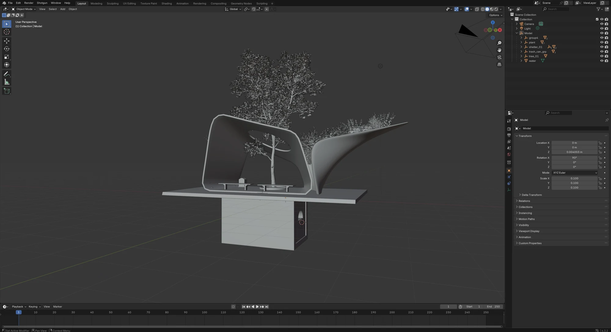
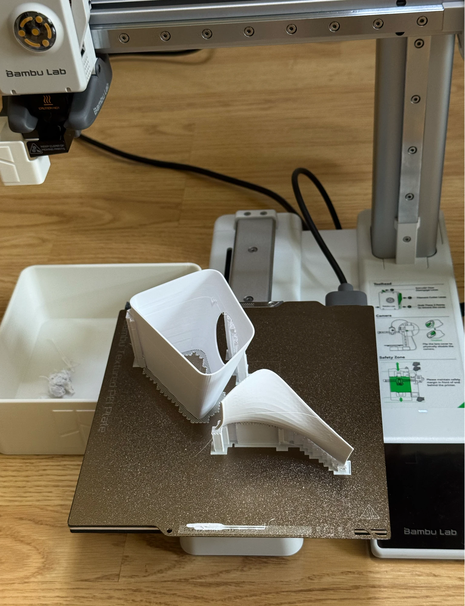
쉘터의 구조와 공간을 3D로 모델링하고, 렌더를 통해 형태와 식재를 시각화한 뒤 3D 프린팅으로 실물 모형을 제작하는 과정입니다.
Project 02 · Rendered artwork
A Future Field Trip · Materials, scene composition, lighting and image finishing.
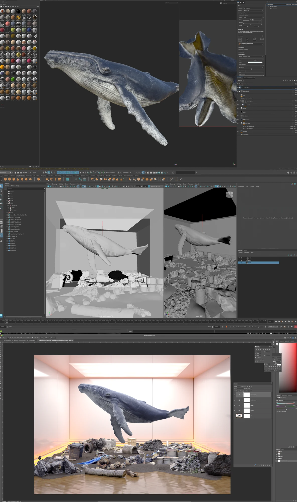
재질과 장면 구성, 조명, 렌더링, 이미지 후반 작업을 통해 하나의 작품을 완성합니다. 작업 화면과 완성 이미지를 함께 살펴볼 수 있습니다.
건축 공간과 제품, 작품 속 장면을 모델링, 재질, 조명, 렌더링으로 구체화합니다. 현재 예시는 건축 디자인과 렌더 작품으로 구성되어 있습니다.
Some tools need dedicated practice. Make time for digital image-making, motion workflows or 3D fundamentals before and alongside a larger project.
Your starting point and tools will be discussed during consultation.
창작 탐색, 개인 프로젝트, 포트폴리오 중 자신의 목표에서 출발합니다. 도구에 익숙해질 시간이 필요하다면 Technical Foundations에서 기초를 충분히 연습하고 프로젝트와 연결합니다. 구체적인 구성은 상담을 통해 정합니다.
Our digital art classes are for high school students in grades 9–12, including beginners and students developing an original project or creative portfolio.
Yes. Students can develop a short animated scene through online classes, working through storytelling, storyboards, character design, movement and editing. The project is shaped around the student's experience and interests.
Students explore 3D modeling, architectural design, product visualization, materials, lighting and rendering. Projects can develop into designed spaces, objects or finished rendered artwork.
Students can develop original work and document sketches, production decisions and revisions for a creative portfolio, school project or extracurricular activity. The goals and requirements are discussed individually.
Online digital art classes are available to high school students in Tenafly, Bergen County, New Jersey, and beyond. Use the consultation form to discuss your starting point and project goals.
9–12학년 학생을 위한 프로젝트 중심 온라인 디지털 아트 수업입니다. 초보자부터 애니메이션, 영상 편집과 모션 그래픽, 3D 디자인과 렌더링, 포트폴리오 프로젝트를 준비하는 학생까지 목표에 맞는 시작점을 상담합니다.
07 · Beyond the classroom
Use what you learn in personal projects, school activities and future creative study. Practice presenting ideas, responding to feedback and working through unfamiliar problems.